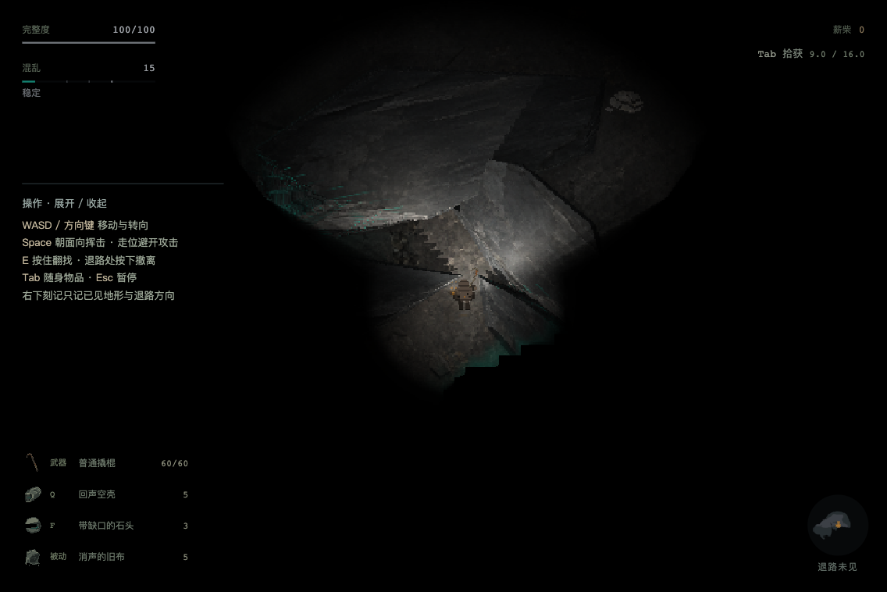
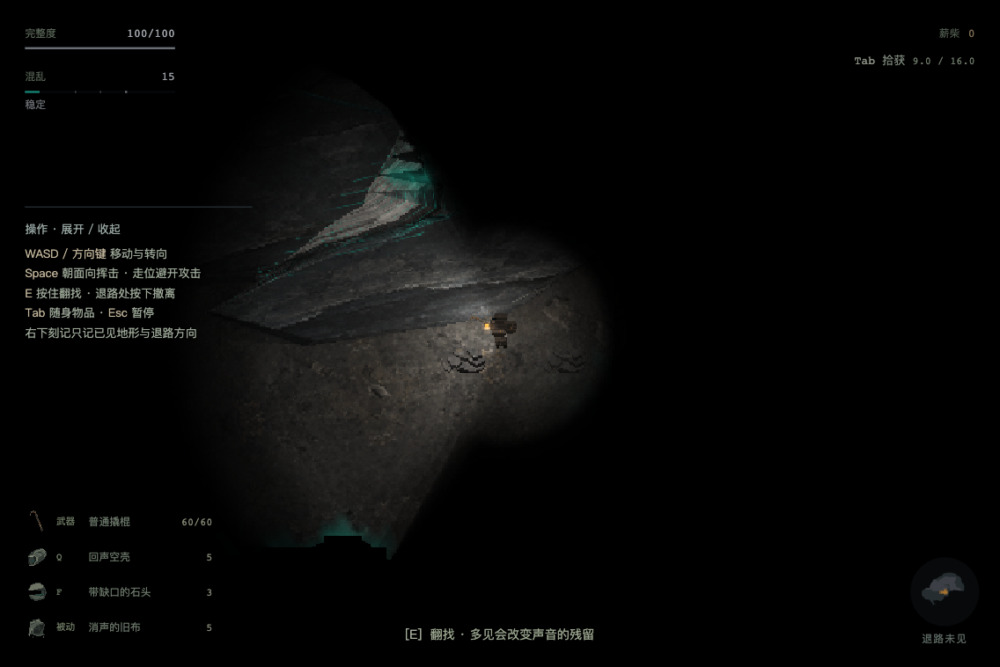
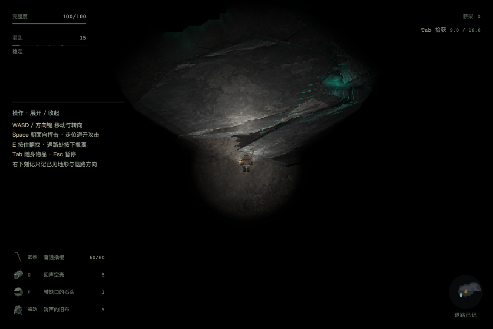
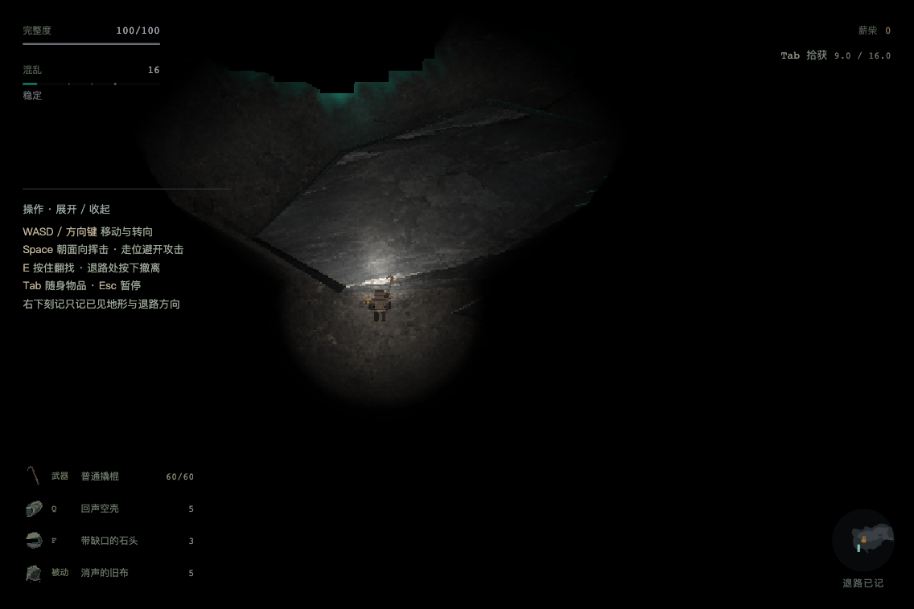
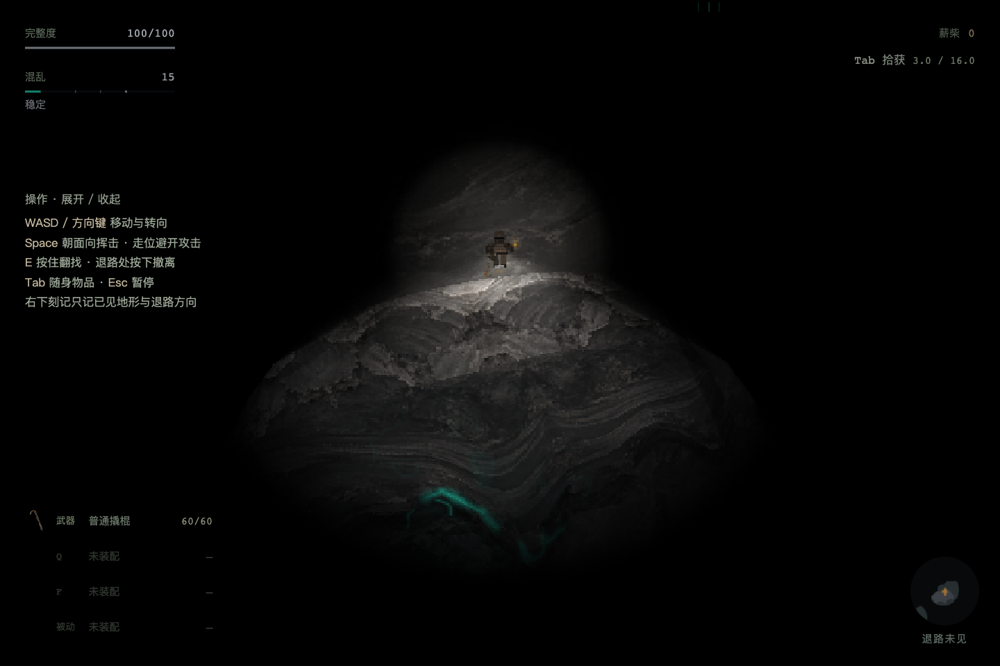

仅消除 8px 保守格在真实轮廓外的虚占。20px 身体、实体与虚空不放宽；生成身份、奖励、材料未改。这是明确设定起点的故障回归，不是自然玩家行程。
完整范围与限制 · 真实物理步报告 · 真实冲刺当帧保存与冷续 · 贴边保存与冷续 · CPU几何与20库开销 · 3073源指纹
明确起点 (580.572, 306.000)，普通按键 500ms 后 (591.978, 293.563)。沿真实法线滑动；全程完整身体合法。

明确起点 (538.000, 334.000)，普通按键 500ms 后 (505.931, 343.563)。沿真实法线滑动；全程完整身体合法。

明确起点 (341.603, 354.000)，普通按键 500ms 后 (331.257, 348.387)。沿真实法线滑动；全程完整身体合法。

明确起点 (264.919, 330.000)，普通按键 500ms 后 (266.657, 324.921)。沿真实法线滑动；全程完整身体合法。

受控贴边起点 (680,160) 已通过真正首页 Continue 冷恢复。
